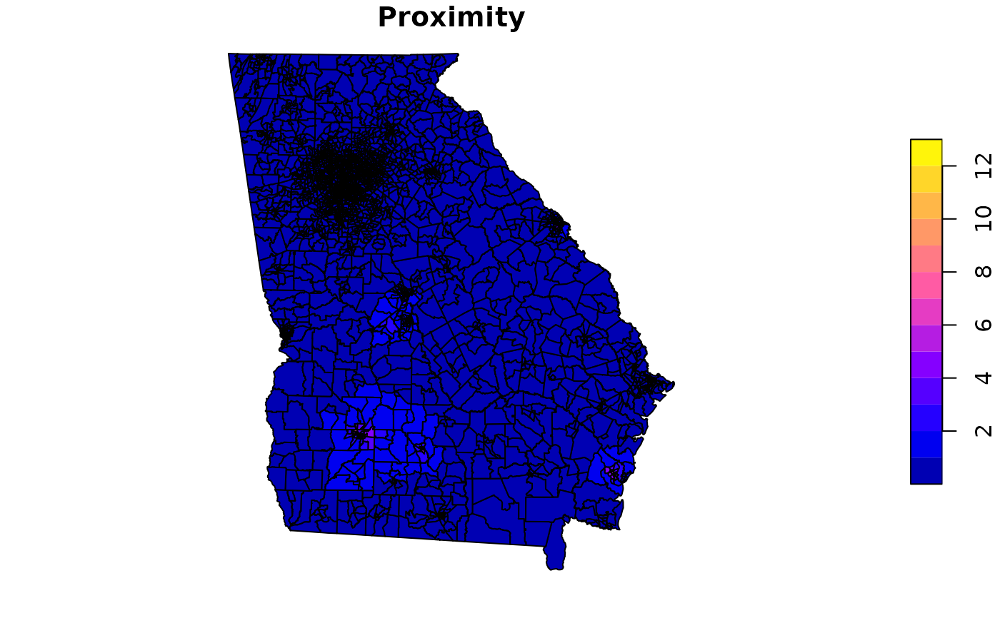

Calculate cumulative proximity to features for geographic areas
get_proximity.RdThis function calculates the sum of inverse distances between the geometric center
of the from area and all to features within a specified tolerance.
Arguments
- from
polygon or multipolygon object with class sf or sfc.
- to
object of any geometry type (point, polygon, linestring, geometry collection) with class sf or sfc.
- tolerance
The maximum search distance for
tofeatures (optional).- units
The units of the tolerance value (e.g., "m", "km", "ft", "yd", "fathom", "mi", "naut_mi", "au"), if tolerance is specified. Ignored if tolerance is omitted.
- weights
An optional numeric vector with the same length as
tothat applies a weight to eachtofeature.
Details
get_proximity calculates proximity statistics for each polygon in from based on the cumulative inverse distance
between the geometric center of from and each feature in to, typically representing environmental hazard(s)
of interest or concern. If a tolerance value is provided, only hazards within the tolerance distance will be included
in proximity calculations. For polygons that do not have any hazards within the specified tolerance, proximity will only
consider the single nearest distance.
Users may also weight the proximity calculations based on the expected risk or severity of each hazard in to by
providing a vector of weights corresponding to each hazard.
In cases where the distance between the polygon centroid in from and a to feature is less than the block area
equivalent radius, distance is calculated as 90% of the block area equivalent radius. This adjustment reduces the
influence of features that happen to be located near the polygon centroid.
Examples
set.seed(123)
w <- floor(runif(nrow(npls), min=0, max=10))
#calculate proximity to all superfund sites
p <- get_proximity(from=ga, to=npls, weights = w)
ga$Proximity <- p
plot(ga['Proximity'])

#calculate proximity to superfund sites within 10 miles of tract boundary
p10 <- get_proximity(from=ga, to=npls, tolerance = 10, units = 'mi', weights = w)